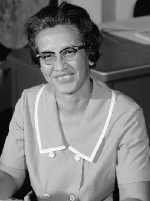
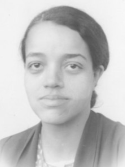

Katherine Johnson
African-American, Katherine was born on the 26th of August 1918 and died on the 24th of February 2020 (due to Covid-19). Yet, she was a mathematician and physicist for NASA (1953) despite the segregation due to her skin colour and helped during the cold war to send the human on the moon, and so, worked on the Apollo-11 mission.

Mary Jackson
African-American, Mary was born on the 9th of April 1921 and died on the 11th of February 2005. She also experienced the segregation (woman and skin colour), despite this, she was a mathematician and aerospace engineer for NASA (1958). She also helped on the Apollo-11 mission.

Dorothy Johnson
African-American, Dorothy was born on the 20th of September 1910 and died on the 10th of November 2008. She was also a mathematician but also a computer scientist for NASA in 1943. Like the other women, she experienced segregation but still managed to give a great help to the Apollo-11 mission